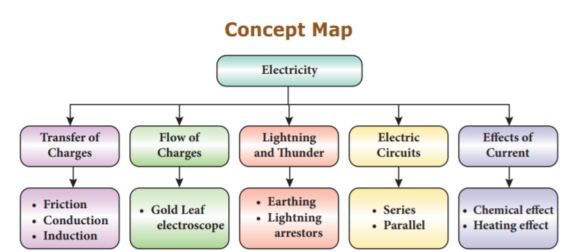

1. When an ebonite rod is rubbed with fur, the charge acquired by the fur is
a) negative
b) positive
c) partly positive and partly negative
d) None of these
2. The electrification of two different bodies on rubbing is because of the transfer of
a) neutrons
b) protons
c) electrons
d) protons and neutrons
3. Which of the following a simple circuit must have?
a) Energy source, Battery, Load
b) Energy source, Wire, Load
c) Energy source, Wire, Switch
d) Battery, Wire, Switch
4. An electroscope has been charged by induction with the help of charged glassrod. The charge on the electroscope is
a) negative
b) positive
c) both positive and negative
d) None of the above
5. Fuse is
a) a switch
b) a wire with low resistance
c) a wire with high resistance
d) a protective device for breaking an electric circuit
1. dash takes place by rubbing objects together.
2. The body which has lost electrons becomes dash.
3. dash is a device that protects building from lightning strike.
4. dash has a thin metallic filament that melts and breaks the connection when the circuit is overheated.
5. Three bulbs are connected end to end from the battery. This connection is called dash.
3. State true or false. If false, correct the statement.
1. The charge acquired by an ebonite rod rubbed with a piece of flannel is negative
2. A charged body induces an opposite charge on an uncharged body when they are brought near.
3. Electroscope is a device used to charge a body by induction.
4. Water can conduct electricity.
5. In parallel circuit, current remains the same in all components.
Two similar charges |
acquires a positive charge |
Two dissimilar charges |
prevents a circuit from overheatinge |
When glass rod is rubbed with silk |
repel each other |
When ebonite rod is rubbed with fur |
attract each other |
Fuse |
acquires a negative Charge |
1. When a glass rod is rubbed with silk cloth both get charged.
2. When a comb is rubbed with dry hair it attracts small bits of paper.
3. When you touch the metal disc of an electroscope with a charged glass rod the metal leaves get diverged.
4. In an electroscope the connecting rod and the leaves are all metals.
5. One should not use an umbrella while crossing an open field during thunderstorm.
1. Assertion: People struck by lightning receive a severe electrical shock.
Reason: Lightning carries very high voltage.
2. Assertion: It is safer to stand under a tall tree during lightning.
Reason: It will make you the target for lightning.
a) Both assertion and reason are true and reason is the correct explanation of assertion.
b) Both assertion and reason are true and reason is not the correct explanation of assertion.
c) Assertion is true but reason is false.
d) Assertion is false but reason is true.
1. How charges are produced by friction?
2. What is earthing?
3. What is electric circuit?
4. What is electroplating?
5. Give some uses of electroplating.
1. Explain three ways of charge transfer.
2. What is electroscope? Explain how it works.
3. Explain series and parallel circuit.
4. How lightning takes place?
5. What is electroplating? Explain how it is done.
1. Concept of physics - HC Verma
2. A Text-Book on Static Electricity – Hobart Mason
3. Fun With Static Electricity - Joy Cowley
4. Frank New Certificate Physics. McMillan Publishers.
1. http://sciencenetlinks.com/lessons/staticelectricity-2/
2. https://www.stem.org.uk/resources/ community/collection/13389/static-electricity
3. https://www.physicsclassroom.com/class/ estatics

I C T CORNER
Electricity
Through this activity you will learn the usage of electricity through Interactive games.
Step 1 Open the Browser and type the URL given below
Step 2 You will see lot of games which is related to Electricity
Step 3 Click the Electricity circuits activity (First activity), you will see the sub topics, like Electricity in home, Introduction to circuits etc...
Step 4 Select the sub topic and play the game. Likewise play all the games.
Browse in the link: http://interactivesites.weebly.com/electricity-and-energy.html *Pictures are indicative only